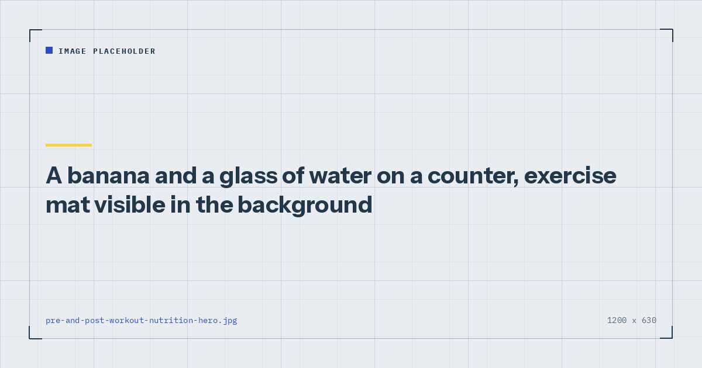

Habits & Recovery
What to Eat Before and After a Home Workout
Almost all of the advice in this area was written for people training twice a day. For a thirty-minute home session, most of it can be safely ignored.

I am not a dietitian. This is general information rather than dietary advice. If you have diabetes, take medication affected by food timing, are pregnant, or have any condition where meal timing matters medically, speak to your GP or a registered dietitian rather than following general guidance.
Is the anabolic window real?
The idea is that there is a narrow period after training — often stated as thirty to sixty minutes — during which protein must be consumed or the session's benefit is substantially lost.
This has not held up well. The current picture is that the window, if it is meaningful at all, is considerably wider than claimed, and that total daily protein intake matters far more than timing around sessions. Meta-analytic evidence on protein supplementation and resistance training points consistently at total intake as the primary variable.1
Where timing may retain some relevance is if you have trained genuinely fasted after many hours without food. Even then, "eat a meal reasonably soon afterwards" covers it — there is no need to have a shake ready at the end of the set.
What actually matters
Three things, in order of how much they matter.
1. Total daily protein. Roughly 1.4 to 1.6 g/kg for someone training to build or maintain muscle. This dwarfs every timing consideration and is covered in how much protein you need for home workouts.
2. Total daily energy intake. Whether you are in surplus, maintenance or deficit determines a great deal about what training produces, and it operates over weeks rather than hours.
3. Not being uncomfortable during the session. The most practical consideration for home training and the one worth optimising, because a session cut short by feeling sick is worse than any timing error.
Everything below is downstream of those three.
Eating before
For a thirty-minute home session at moderate to high effort, pre-workout nutrition is largely a comfort question.
If you last ate two to four hours ago: nothing needed. You have ample stored glycogen for a session of this length.
If it has been longer and you feel low: something small and mostly carbohydrate about thirty to sixty minutes before. A banana, a slice of toast, a handful of dried fruit. Not a full meal.
Avoid a large or high-fat meal in the ninety minutes beforehand. Digestion competes for blood flow and the result is discomfort, particularly for anything involving lying down or core work.
Caffeine has reasonable evidence as a performance aid, with effects most apparent at higher intensities. For a moderate home session you are unlikely to notice much. If you use it, thirty to sixty minutes beforehand is the usual timing — and be aware of the half-life if you train in the evening, per sleep and strength.
Training fasted
Common for morning trainees and worth addressing plainly.
For a short session, training fasted is fine for most healthy people. The claim that it substantially increases fat loss has not held up well — over a day, total energy balance appears to dominate, and any acute difference in fuel use is largely offset later.
The practical considerations are individual. Some people train perfectly well fasted; others feel weak and perform worse, which reduces the training stimulus. That is the variable that actually matters, and it is worth testing rather than assuming.
Two exceptions where fasted training is not a neutral choice: if you have diabetes or take medication affecting blood sugar, and if you have a history of disordered eating. Both warrant a conversation with a clinician rather than experimentation.
Eating after
Eat a normal meal containing protein within a few hours. That is genuinely the whole recommendation.
If it is convenient to eat within an hour, do. If your session is at seven and you eat at eight, that is entirely fine. If you trained fasted and it is now four hours later, that is worth avoiding — not because a window closed but because you have gone a long time without protein.
What to eat: something with 25 to 40 grams of protein, as with any meal. Options are in high-protein meals you can make in 15 minutes.
What you do not need: a shake immediately after the last set, fast-digesting carbohydrate specifically, or anything marketed as post-workout. Those products exist because the anabolic window story sold well.
Total daily protein dwarfs every timing consideration. Eat a normal meal within a few hours and stop thinking about it.
Hydration
More relevant than most of the above and less discussed.
Meaningful dehydration impairs performance, and for a thirty-minute indoor session most people are fine with normal drinking through the day plus water to hand during the session.
Where it matters more: training in a hot room, training in the morning after a night without fluids, and any session long or intense enough to produce substantial sweating. Home training in a small warm flat gets hotter than people expect, which is one reason the lunch break session is built around heat management.
Sports drinks are unnecessary for sessions of this length. They are designed for prolonged endurance activity, not thirty minutes of push-ups.
On pre-workout supplements
Briefly, because the category attracts more claims than evidence.
The ingredient with the clearest support is caffeine. Creatine has good evidence but works through chronic daily use rather than as a pre-workout, so timing it around sessions is unnecessary. Most other ingredients in pre-workout blends have weak or absent evidence at the doses used.
Two practical cautions. Doses in blends are often undisclosed or proportionally small. And the caffeine content is frequently high enough to affect sleep if taken in the evening, which for a home trainee is a real cost against a marginal benefit.
If you want the caffeine effect, coffee is cheaper, better characterised and easier to dose.
The short version
- Before: nothing needed if you ate in the last few hours. Something small and carbohydrate-based if you feel low. Avoid a large meal in the ninety minutes before.
- During: water to hand. Nothing else for a session under an hour.
- After: a normal meal with 25 to 40 grams of protein, within a few hours.
- Overall: hit your daily protein target and stop worrying about the rest.
Adult activity guidance concerns activity rather than nutrition,2 and no eating strategy compensates for not training. The nutritional variable that reliably matters for someone doing home resistance training is total daily protein, and it is not a timing question.
Where to go next
For the daily target, see how much protein you need for home workouts. For meals that reach it quickly, see high-protein meals you can make in 15 minutes.
Frequently asked questions
Is the anabolic window real?
Not in the narrow form usually described. Total daily protein intake matters far more than timing around sessions. If the window is meaningful at all it is considerably wider than the thirty to sixty minutes commonly claimed.
Should I eat before a home workout?
Not if you ate within the last two to four hours — you have ample stored glycogen for a session of that length. If it has been longer and you feel low, something small and mostly carbohydrate thirty to sixty minutes beforehand is enough.
Is fasted training better for fat loss?
The evidence does not support it. Over a day, total energy balance appears to dominate, and any acute difference in fuel use is largely offset later. Train fasted if you feel fine doing so; do not if it reduces your performance.
What should I eat after a workout?
A normal meal containing 25 to 40 grams of protein, within a few hours. There is no need for a shake immediately after the last set or for anything marketed specifically as post-workout.
Do I need a sports drink during a home workout?
No. Sports drinks are designed for prolonged endurance activity, not thirty minutes of resistance training. Water to hand is sufficient for a session under an hour.
Are pre-workout supplements worth it?
The ingredient with the clearest support is caffeine, which coffee provides more cheaply and with a known dose. Most other ingredients in blends have weak evidence at the doses used, and the caffeine content is often high enough to affect sleep if taken in the evening.
Sources and further reading
- Morton RW, Murphy KT, McKellar SR, et al. “A systematic review, meta-analysis and meta-regression of the effect of protein supplementation on resistance training-induced gains in muscle mass and strength in healthy adults.” British Journal of Sports Medicine, 2018;52(6):376–384. PubMed.
- World Health Organization. WHO Guidelines on Physical Activity and Sedentary Behaviour. 2020.
- Nunes EA, Colenso-Semple L, McKellar SR, et al. “Systematic review and meta-analysis of protein intake to support muscle mass and function in healthy adults.” Journal of Cachexia, Sarcopenia and Muscle, 2022;13(2):795–810. PubMed.
- Bonnar D, Bartel K, Kakoschke N, Lang C. “Sleep Interventions Designed to Improve Athletic Performance and Recovery: A Systematic Review of Current Approaches.” Sports Medicine, 2018;48(3):683–703. PubMed.
Comments
Comments are not enabled yet. Add a hosted comment embed (Disqus, Commento, Giscus) inside this container when you are ready.